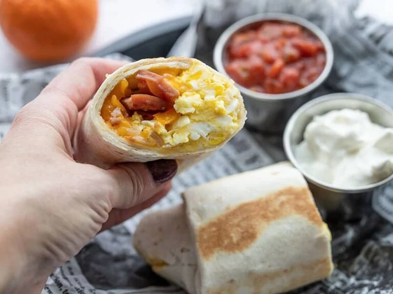

Breakfast burrito

Description
Make ahead breakfast burritos are an easy heatable
and portable breakfast meal prep idea.
Ingredients
- 8 oz. cheddar
- 1 yellow onion
- 1 bell pepper
- 2 Tbsp butter, divided
- 2 pinches salt and pepper
- 1 lb. cooked ham
- 12 large eggs
- 8 large flour tortillas (burrito size)
Instructions
- Begin by preparing all of the filling ingredients
for the breakfast burritos. Shred the cheddar,
if not purchased pre-shredded.
- Dice the onion and bell pepper. Add the onion and bell pepper
to a large skillet with ½ Tbsp butter and sauté over medium heat
until the onions are soft and translucent (about 5 minutes).
Season the bell pepper and onion with a pinch of salt and pepper.
Transfer the bell pepper and onion to a bowl.
- Dice the ham, then add it to the skillet with another ½ Tbp butter.
Sauté the ham over medium heat until it is browned (about 5 minutes).
Transfer the ham to a separate bowl and clean the skillet.
- Crack 12 eggs into a bowl and lightly whisk. Add the last tablespoon
butter to the skillet and heat over medium. Once the skillet is hot,
spread the butter to coat the surface, then pour in the whisked eggs.
- Push the eggs in toward the center of the skillet as they set on the bottom,
until most of the eggs have set, but the eggs still look moist.
Do not over cook the eggs or they'll become dry. Season the eggs
with a pinch of salt and pepper
- To assemble the burritos, add a scoop of scrambled eggs to the middle
of each tortilla, then top with a scoop of cooked bell pepper and onion,
a handful of cheese, and some of the cooked ham.
- To roll the burritos, first fold the tortilla up from the bottom,
then fold in the sides, and then finish rolling the burrito up until
it has closed. Wrap each burrito in parchment paper using the same
folding and rolling method (bottom up, sides in, finish rolling up).
Label each burrito on the parchment paper or on masking tape